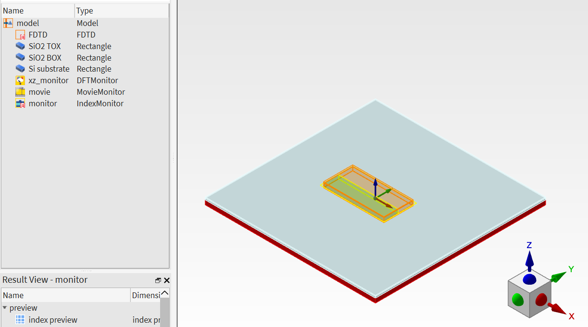
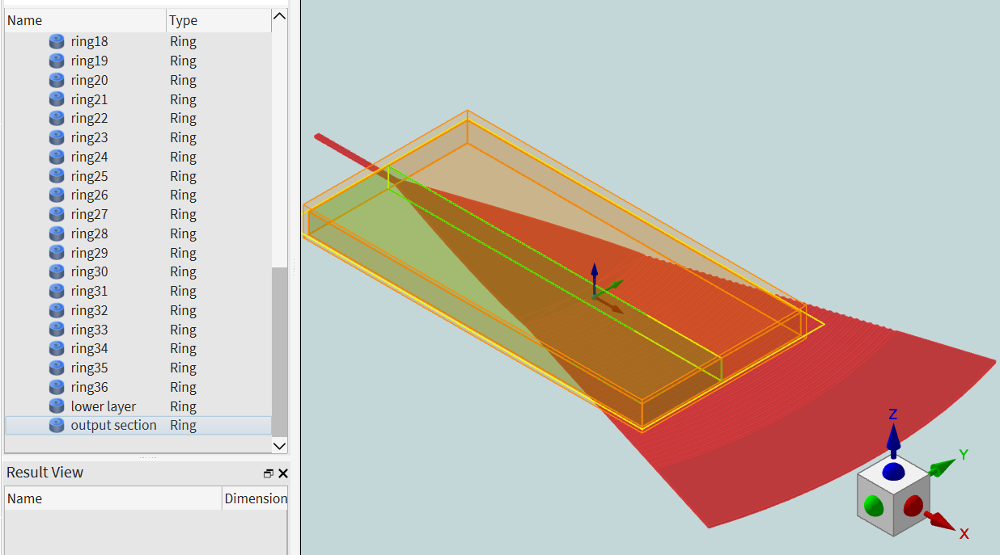
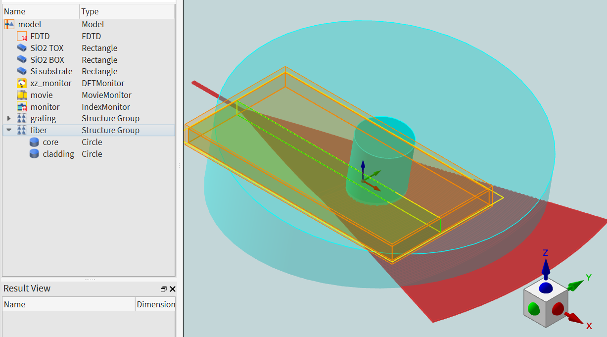
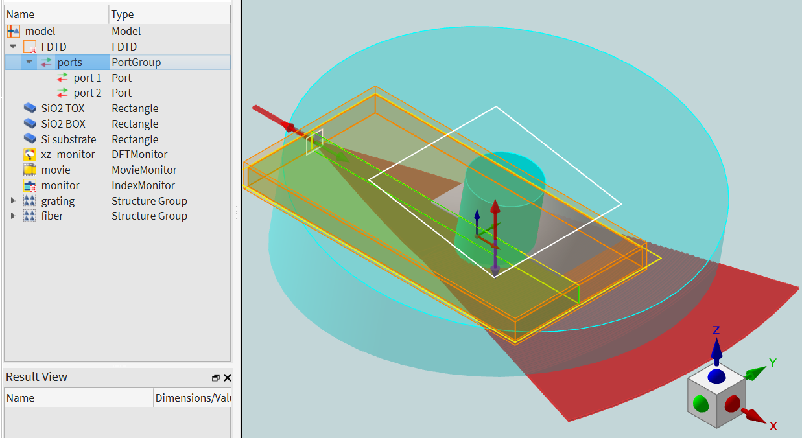
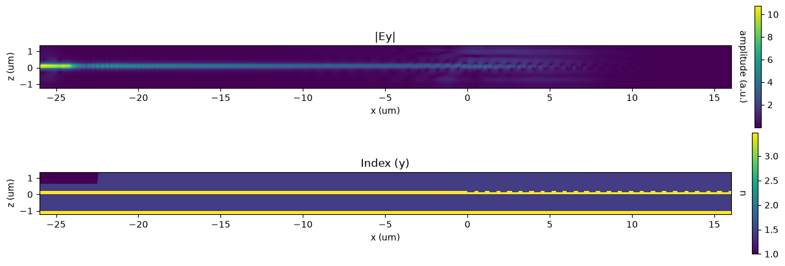
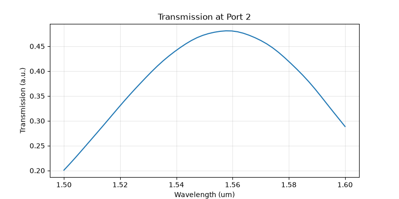

Grating Coupler#
Define a grating coupler that connects a single-mode fiber on a photonic chip surface to an integrated waveguide.
This example is part of the grating-coupler workflow:
Create a grating coupler: set up the base simulation and run it.
Optimize the grating coupler: improve the grating geometry for better coupling efficiency.
Extract S-parameters: export S-parameters to Interconnect.
Lumerical FDTD and Zemax Interconnect: export the field to ZBF for import into Zemax.
In this example, we will show:
How to set up a structure group
How to set up a custom object
How to copy an object
How to edit the properties of multiple objects
Prerequisites#
Valid FDTD and MODE licenses are required.
Perform required imports#
[ ]:
1from collections import OrderedDict
2from typing import Dict
[ ]:
3import matplotlib.pyplot as plt
4import numpy as np
[ ]:
5import ansys.lumerical.core as lumapi
Assign key parameters#
[ ]:
6show_GUI = True
7file_name = "./grating_coupler_setup.fsp"
8
9# Unit
10um_to_m = 1e-6
11m_to_um = 1e6
12
13# Materials
14MATERIAL_SIO2 = "SiO2 (Glass) - Palik"
15MATERIAL_SI = "Si (Silicon) - Palik"
16
17# FDTD region
18fdtd_region = OrderedDict(
19 {
20 "dimension": "3D",
21 "x": -5 * um_to_m,
22 "x span": 42 * um_to_m, # x min = -26um, x max = 16um
23 "y": 0,
24 "y span": 20 * um_to_m, # y min = -10um, y max = 10um
25 "z min": -1.2 * um_to_m,
26 "z max": 1.3 * um_to_m,
27 "x min bc": "PML",
28 "x max bc": "PML",
29 "y min bc": "Anti-Symmetric",
30 "y max bc": "PML",
31 "z min bc": "PML",
32 "z max bc": "PML",
33 "pml profile": 1, # standard
34 "pml layers": 8,
35 }
36)
37
38# Global source (wavelength range)
39source_properties = OrderedDict(
40 {
41 "set wavelength": 1,
42 "wavelength start": 1.5 * um_to_m,
43 "wavelength stop": 1.6 * um_to_m,
44 "optimize for short pulse": 1,
45 }
46)
47
48# Global monitor (frequency points)
49monitor_properties = OrderedDict(
50 {
51 "use source limits": 1,
52 "frequency points": 50,
53 }
54)
55
56# Simulation items
57# SiO2 TOX (top oxide)
58sio2_tox = OrderedDict(
59 {
60 "name": "SiO2 TOX",
61 "x": 0.0,
62 "x span": 120 * um_to_m,
63 "y": 0.0,
64 "y span": 120 * um_to_m,
65 "z min": 0.0,
66 "z max": 0.7 * um_to_m,
67 "material": MATERIAL_SIO2,
68 "override mesh order from material database": 1, # enable custom mesh order for better accuracy
69 "mesh order": 3,
70 "override color opacity from material database": 1, # optional, enable custom opacity for better visualization
71 "alpha": 0.25,
72 }
73)
74# SiO2 BOX (buried oxide)
75sio2_box = OrderedDict(
76 {
77 "name": "SiO2 BOX",
78 "x": 0.0,
79 "x span": 120 * um_to_m,
80 "y": 0.0,
81 "y span": 120 * um_to_m,
82 "z min": -1 * um_to_m,
83 "z max": 0,
84 "material": MATERIAL_SIO2,
85 }
86)
87# Si substrate
88si_substrate = OrderedDict(
89 {
90 "name": "Si substrate",
91 "x": 0.0,
92 "x span": 120 * um_to_m,
93 "y": 0.0,
94 "y span": 120 * um_to_m,
95 "z min": -4 * um_to_m,
96 "z max": -1 * um_to_m,
97 "material": MATERIAL_SI,
98 }
99)
100
101# --- Monitors ---
102xz_monitor = OrderedDict(
103 {
104 "name": "xz_monitor",
105 "monitor type": "2D Y-normal",
106 "x min": -26 * um_to_m,
107 "x max": 16 * um_to_m,
108 "y": 0,
109 "z min": -1.2 * um_to_m,
110 "z max": 1.3 * um_to_m,
111 "override global monitor settings": 1,
112 "use source limits": 1,
113 "frequency points": 1,
114 }
115)
116movie_monitor = OrderedDict(
117 {
118 "name": "movie",
119 "monitor type": "2D Z-normal",
120 "x min": -27.5 * um_to_m,
121 "x max": 17.5 * um_to_m,
122 "y": 0,
123 "y span": 23 * um_to_m,
124 "horizontal resolution": 320,
125 "scale": 1,
126 }
127)
128index_monitor = OrderedDict(
129 {
130 "name": "monitor",
131 "monitor type": "2D Y-normal",
132 "x": -5 * um_to_m,
133 "x span": 42 * um_to_m,
134 "y": 0,
135 "z min": -1.2 * um_to_m,
136 "z max": 1.3 * um_to_m,
137 }
138)
[ ]:
139# Set up the parameters for the grating and fiber structures.
140
141# --- Grating structure group ---
142grating_variables = {
143 "target length": 25 * um_to_m,
144 "h total": 0.22 * um_to_m,
145 "etch depth": 0.1 * um_to_m,
146 "duty cycle": 0.3992,
147 "pitch": 0.6713 * um_to_m,
148 "radius": 25 * um_to_m,
149 "y span": 15 * um_to_m,
150 "L extra": 10 * um_to_m,
151 "waveguide width": 0.5 * um_to_m,
152 "material": MATERIAL_SI,
153 "m": 1.15,
154 "waveguide length": 10 * um_to_m,
155}
156
157# --- Fiber structure group ---
158fiber_variables = {
159 "core diameter": 9 * um_to_m,
160 "cladding diameter": 50 * um_to_m,
161 "z span": 20 * um_to_m,
162 "theta": 10.0, # deg, fiber tilt
163 "core index": 1.44427,
164 "cladding index": 1.43482,
165}
Step 1: Set up simple objects#
[ ]:
166def set_up_simple_objects(
167 lum_obj,
168 fdtd_region: OrderedDict,
169 source_properties: Dict,
170 monitor_properties: Dict,
171 rect_objects: tuple[OrderedDict],
172 xz_monitor: OrderedDict,
173 movie_monitor: OrderedDict,
174 index_monitor: OrderedDict,
175 file_name: str,
176) -> None:
177 """
178 Set up a simple FDTD simulation with the given objects and monitors.
179
180 Parameters
181 ----------
182 lum_obj: Lumerical FDTD object
183 fdtd_region: OrderedDict containing FDTD region properties
184 source_properties: Dict containing global source properties
185 monitor_properties: Dict containing global monitor properties
186 rect_objects: tuple of OrderedDicts containing rectangular object properties
187 xz_monitor: OrderedDict containing XZ plane monitor properties
188 movie_monitor: OrderedDict containing movie monitor properties
189 index_monitor: OrderedDict containing index monitor properties
190 """
191 # Start from an empty project
192 lum_obj.switchtolayout()
193 lum_obj.deleteall()
194
195 # --- 1. FDTD region ---
196 lum_obj.addfdtd(properties=fdtd_region)
197
198 # --- 2. Global source / monitor settings ---
199 for key, value in source_properties.items():
200 lum_obj.setglobalsource(key, value)
201
202 for key, value in monitor_properties.items():
203 lum_obj.setglobalmonitor(key, value)
204
205 # --- 3. Cladding / substrate stack ---
206 for obj in rect_objects:
207 lum_obj.addrect(properties=obj)
208
209 # --- 4. Monitors ---
210 lum_obj.adddftmonitor(properties=xz_monitor) # DFT (frequency-domain) monitor
211 lum_obj.addmovie(properties=movie_monitor) # movie monitor
212 lum_obj.addindex(properties=index_monitor) # index monitor
213
214 lum_obj.save(file_name)
215
216
217# Open Lumerical FDTD window
218fdtd = lumapi.FDTD(hide=not show_GUI)
219
220set_up_simple_objects(
221 lum_obj=fdtd,
222 fdtd_region=fdtd_region,
223 source_properties=source_properties,
224 monitor_properties=monitor_properties,
225 rect_objects=(sio2_tox, sio2_box, si_substrate),
226 xz_monitor=xz_monitor,
227 movie_monitor=movie_monitor,
228 index_monitor=index_monitor,
229 file_name=file_name,
230)

Step 2: Set up structure groups: grating#
[ ]:
231# Calculate intermediate parameters
232n_periods = int(grating_variables["target length"] / grating_variables["pitch"])
233fill_width = float(grating_variables["pitch"] * grating_variables["duty cycle"])
234etch_width = float(grating_variables["pitch"] * (1 - grating_variables["duty cycle"]))
235L = float(n_periods * grating_variables["pitch"] + etch_width)
236theta = np.arcsin(0.5 * grating_variables["y span"] / grating_variables["radius"]) * 180 / np.pi
237
238obj_list = []
239obj_type_list = []
240
241# Define each object.
242# Waveguide
243waveguide = OrderedDict(
244 {
245 "name": "waveguide",
246 "x min": -grating_variables["waveguide length"],
247 "x max": 0,
248 "y": 0,
249 "y span": grating_variables["waveguide width"],
250 "z min": 0,
251 "z max": grating_variables["h total"],
252 }
253)
254obj_list.append(waveguide)
255obj_type_list.append("rect")
256
257# Taper section
258x_span = grating_variables["radius"] * np.cos(theta * np.pi / 180)
259L_taper = x_span
260w1 = grating_variables["waveguide width"] / 2
261w2 = grating_variables["y span"] / 2
262x0 = L_taper / 2
263alpha = (w1 - w2) / L_taper ** grating_variables["m"]
264equation = f"{alpha} * ({x0} - x)^{grating_variables['m']} + {w2}"
265taper_section = OrderedDict(
266 {
267 "name": "taper",
268 "x min": 0,
269 "x max": grating_variables["radius"] * np.cos(theta * np.pi / 180),
270 "z min": 0,
271 "z max": grating_variables["h total"],
272 "y span": grating_variables["y span"],
273 "equation 1": equation,
274 "equation units": "m",
275 }
276)
277obj_list.append(taper_section)
278obj_type_list.append("custom")
279
280# Input section
281input_section = OrderedDict(
282 {
283 "name": "input section",
284 "inner radius": grating_variables["radius"] * np.cos(theta * np.pi / 180),
285 "outer radius": grating_variables["radius"],
286 "x": 0,
287 "y": 0,
288 "z min": 0,
289 "z max": grating_variables["h total"],
290 "theta start": -theta,
291 "theta stop": theta,
292 }
293)
294obj_list.append(input_section)
295obj_type_list.append("ring")
296
297# Add each grating period
298for i in range(n_periods):
299 grating_item = OrderedDict(
300 {
301 "name": f"ring{i}", # start from 0
302 "x": 0,
303 "y": 0,
304 "z min": grating_variables["h total"] - grating_variables["etch depth"],
305 "z max": grating_variables["h total"],
306 "theta start": -theta,
307 "theta stop": theta,
308 "inner radius": grating_variables["radius"] + grating_variables["pitch"] * i + etch_width,
309 "outer radius": grating_variables["radius"] + grating_variables["pitch"] * (i + 1),
310 }
311 )
312 obj_list.append(grating_item)
313 obj_type_list.append("ring")
[ ]:
314# Function to add objects to a group in the FDTD simulation
315def add_objs_to_group(
316 lum_obj, group_name: str, obj_list: list[OrderedDict], obj_type_list: list[str], file_name: str, name_in_group: list[str] = []
317) -> list[str]:
318 """
319 Add objects to a specified group in the FDTD simulation.
320
321 Parameters
322 ----------
323 lum_obj: The FDTD simulation object.
324 group_name (str): The name of the group to add objects to.
325 obj_list (list[OrderedDict]): A list of object properties.
326 obj_type_list (list[str]): A list of object types corresponding to the objects in obj_list.
327 file_name (str): The name of the file to save the simulation to.
328 name_in_group (list[str], optional): A list to store the names of objects in the group. Defaults to an empty list.
329
330 Returns
331 -------
332 list[str]: The updated list of names of objects in the group.
333 """
334 # Switch to layout mode
335 lum_obj.switchtolayout()
336
337 # Add objects
338 for obj, obj_type in zip(obj_list, obj_type_list):
339 match obj_type:
340 case "rect":
341 lum_obj.addrect(properties=obj)
342 case "custom":
343 lum_obj.addcustom(properties=obj)
344 case "ring":
345 lum_obj.addring(properties=obj)
346 case "circle":
347 lum_obj.addcircle(properties=obj)
348 case _:
349 raise ValueError(f"Unsupported object type: {obj_type}")
350
351 lum_obj.addtogroup(group_name)
352 name_in_group.append(f"{group_name}::{obj['name']}")
353
354 # Save
355 lum_obj.save(file_name)
356
357 return name_in_group
358
359
360grating_names = add_objs_to_group(lum_obj=fdtd, group_name="grating", obj_list=obj_list, obj_type_list=obj_type_list, file_name=file_name)
[ ]:
361# This example shows how to copy an item and modify a few of its properties.
362# Lower layer beneath the grating
363if grating_variables["etch depth"] < grating_variables["h total"]:
364 lower_layer = OrderedDict(
365 {
366 "name": "lower layer",
367 "inner radius": grating_variables["radius"],
368 "outer radius": grating_variables["radius"] + L,
369 "z min": 0,
370 "z max": grating_variables["h total"] - grating_variables["etch depth"],
371 }
372 )
373
374 fdtd.select("grating::input section")
375 fdtd.copy()
376 for key, value in lower_layer.items():
377 fdtd.set(key, value)
378
379 # The new item is already in the group because it was copied from a grouped item.
380 grating_names.append("grating::lower layer")
381
382# Output section
383output_section = OrderedDict(
384 {
385 "name": "output section",
386 "inner radius": grating_variables["radius"] + L,
387 "outer radius": grating_variables["radius"] + L + grating_variables["L extra"],
388 "z min": 0,
389 "z max": grating_variables["h total"],
390 }
391)
392fdtd.select("grating::input section")
393fdtd.copy()
394for key, value in output_section.items():
395 fdtd.set(key, value)
396grating_names.append("grating::output section")
397
398fdtd.save(file_name)
[ ]:
399# This example shows how to set properties for multiple structures.
400shared_properties = OrderedDict(
401 {
402 "material": grating_variables["material"],
403 }
404)
405for structure_name in grating_names:
406 # `setnamed` can only set one property at a time
407 for key, value in shared_properties.items():
408 fdtd.setnamed(structure_name, key, value)
409 # Move each item
410 current_x = fdtd.getnamed(structure_name, "x")
411 fdtd.setnamed(structure_name, "x", current_x - grating_variables["radius"])
412
413fdtd.save(file_name)

Step 3: Set up structure group: fiber#
[ ]:
414# Calculate intermediate parameters
415core_radius = float(fiber_variables["core diameter"] / 2)
416cladding_radius = float(fiber_variables["cladding diameter"] / 2)
417fiber_theta_rad = np.deg2rad(fiber_variables["theta"])
418L = float(fiber_variables["z span"] / np.cos(fiber_theta_rad))
419
420core = OrderedDict(
421 {
422 "name": "core",
423 "radius": core_radius,
424 "x": 0,
425 "y": 0,
426 "z": 0,
427 "z span": L,
428 "material": "<Object defined dielectric>", # object-defined material
429 "index": float(fiber_variables["core index"]), # refractive index
430 "first axis": "y",
431 "rotation 1": float(fiber_variables["theta"]),
432 "override mesh order from material database": 1, # enable custom mesh order for better accuracy
433 "mesh order": 4,
434 }
435)
436
437cladding = OrderedDict(
438 {
439 "name": "cladding",
440 "radius": cladding_radius,
441 "material": "<Object defined dielectric>",
442 "index": float(fiber_variables["cladding index"]),
443 "x": 0,
444 "y": 0,
445 "z": 0,
446 "z span": L,
447 "first axis": "y",
448 "rotation 1": float(fiber_variables["theta"]),
449 "override mesh order from material database": 1, # enable custom mesh order for better accuracy
450 "mesh order": 5,
451 "override color opacity from material database": 1, # optional, enable custom opacity for better visualization
452 "alpha": 0.35,
453 }
454)
455
456add_objs_to_group(lum_obj=fdtd, group_name="fiber", obj_list=[core, cladding], obj_type_list=["circle", "circle"], file_name=file_name)
457
458fdtd.setnamed("fiber", "x", 2.74533 * um_to_m)
459fdtd.save(file_name)

Step 4: Set up the ports as sources#
Use a standard dictionary {} rather than OrderedDict({}) when defining ports, because ports are treated as structures inside Lumerical.
[ ]:
460# Assign parameter
461tox_offset = 0.65 * um_to_m
462
463# Get values of existing structures
464fiber_x_pos = fdtd.getnamed("fiber", "x")
465fiber_y_pos = fdtd.getnamed("fiber", "y")
466fiber_z_pos = fdtd.getnamed("fiber", "z")
467tox_z_pos = fdtd.getnamed("SiO2 TOX", "z")
468
469
470def get_diameter(name: str) -> float:
471 """Get the radius, calculate the diameter, and return it. Returns None if an error occurs."""
472 try:
473 radius = fdtd.getnamed(name, "radius")
474 diameter = 2 * radius
475 return diameter
476 except Exception as e:
477 print(f"Error getting diameter for {name}: {e}")
478 return None
479
480
481# Calculate intermediate
482port_x_pos = fiber_x_pos + tox_offset * np.sin(fiber_theta_rad)
483port_z_pos = tox_z_pos + fiber_z_pos + tox_offset * np.cos(fiber_theta_rad)
484port_offset = 4.0 * get_diameter(name="fiber::core") * np.tan(fiber_theta_rad)
485
486port_1 = {
487 "name": "port 1",
488 "injection axis": "z-axis",
489 "direction": "Backward",
490 "x": port_x_pos,
491 "x span": 20 * um_to_m,
492 "y": fiber_y_pos,
493 "y span": 20 * um_to_m,
494 "z": port_z_pos,
495 "theta": float(fiber_variables["theta"]),
496 "rotation offset": port_offset,
497}
498
499port_2 = {
500 "name": "port 2",
501 "injection axis": "x-axis",
502 "direction": "Forward",
503 "x": -25.5 * um_to_m,
504 "y": 0,
505 "y span": 2.5 * um_to_m,
506 "z": 0.05 * um_to_m,
507 "z span": 2.25 * um_to_m,
508}
509
510fdtd.addport(port_1)
511fdtd.addport(port_2)
512
513fdtd.save(file_name)

Step 5: Run the simulation and plot the results#
The simulation may take approximately 20 minutes to complete.
[ ]:
514# Run the simulation and save the results
515fdtd.run()
516fdtd.save(file_name)
[ ]:
517# Extract data from the xz monitors
518def extract_result_xz_mesh(results, key: str):
519 """Extract x, z mesh and the specified field from the results dictionary."""
520 x_um = np.asarray(results["x"]).squeeze() * 1e6
521 z_um = np.asarray(results["z"]).squeeze() * 1e6
522 x_mesh, z_mesh = np.meshgrid(x_um, z_um)
523 value = np.asarray(results[key]).squeeze()
524 return x_mesh, z_mesh, value
525
526
527xz_result = fdtd.getresult("xz_monitor", "E")
528x_mesh, z_mesh, E = extract_result_xz_mesh(xz_result, "E")
529Ey_abs = np.abs(E[:, :, 1].transpose())
530
531index_result = fdtd.getresult("monitor", "index")
532idx_x_mesh, idx_z_mesh, index_y = extract_result_xz_mesh(index_result, "index_y")
533index_y_real = np.real(index_y.transpose())
[ ]:
534# plot
535fig, axes = plt.subplots(2, 1, figsize=(12, 4), constrained_layout=True)
536
537ey_plot = axes[0].pcolormesh(x_mesh, z_mesh, Ey_abs, shading="auto", cmap="viridis")
538ey_colorbar = fig.colorbar(ey_plot, ax=axes[0], pad=0.01)
539ey_colorbar.set_label("amplitude (a.u.)", rotation=270, labelpad=-35)
540axes[0].set_title("|Ey|")
541axes[0].set_aspect("equal")
542axes[0].set_xlabel("x (um)")
543axes[0].set_ylabel("z (um)")
544
545index_plot = axes[1].pcolormesh(idx_x_mesh, idx_z_mesh, index_y_real, shading="auto", cmap="viridis")
546index_colorbar = fig.colorbar(index_plot, ax=axes[1], pad=0.01)
547index_colorbar.set_label("n", rotation=270, labelpad=-35)
548axes[1].set_title("Index (y)")
549axes[1].set_aspect("equal")
550axes[1].set_xlabel("x (um)")
551axes[1].set_ylabel("z (um)")
552
553plt.show(block=False)

[ ]:
554# Extract transmission data from port 2 and plot
555transmission_port_2 = fdtd.getresult("FDTD::ports::port 2", "T")
556
557wavelength_port_2 = np.asarray(transmission_port_2["lambda"]).squeeze()
558T_port_2 = np.abs(np.asarray(transmission_port_2["T"]).squeeze())
559
560fig, ax = plt.subplots(figsize=(8, 4))
561ax.plot(wavelength_port_2 * 1e6, T_port_2)
562ax.set_xlabel("Wavelength (um)")
563ax.set_ylabel("Transmission (a.u.)")
564ax.set_title("Transmission at Port 2")
565plt.grid(alpha=0.3)
566plt.show(block=False)

[ ]:
567# Close the simulation properly.
568if not show_GUI:
569 fdtd.close()